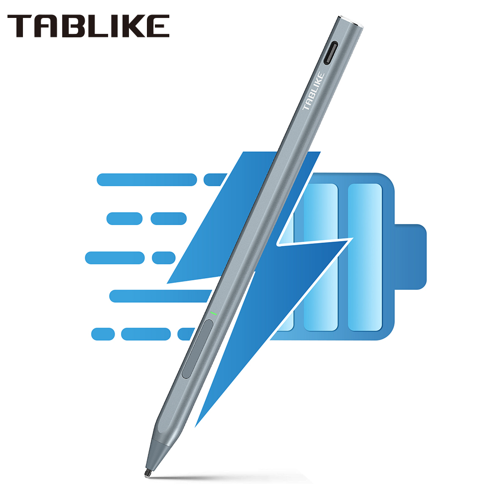

Tablike H200 Stylus

Stylus Pen for Surface USB-C Charging 4096 for Microsoft Surface Pro 8 7 6 5 4 3 X/ Surface 3/Go 3 2/Laptop 4 3 2/Book 3 2 1
Compatible Models:
Surface Pro X,Surface Pro 9,Surface Pro 8, Surface Pro 7, Surface Pro 6 , Surface Pro 5 , Surface Pro 4, Surface Pro 3 , Surface Studio 2 , Surface Studio , Microsoft Surface , Surface Book 3 , Surface Book 2 , Surface Book , Surface Go 3 , Surface Go 2 , Surface Go , Surface Laptop 5 , Surface Laptop 4 , Surface Laptop 3 , Surface Laptop 2 , Surface Laptop.
ASUS Tranformer 3 Pro (T303UA), ASUS Tranformer 3 (T305CA) , ASUS Tranformer Pro (T304UA), ASUS ZenBook FIip S (UX370UA), ASUS Vivob๐ok Flip 12 R211NA, ASUS Vivob๐ok Flip 14 R211NA
HP Envy Laptop 17-aexxx, HP Envy x360 15-bo0xx, HP Envy x360 15-bq0xx, HP Spectre x2 12-c0xx,HP Spectre x360 13-ac0xx, HP Spectre x360 15-al0xx, HP Pavilion x360 ac000, HP Pavilion x360 11m-ad0xx, HP Pavilion x360 14m-cd0xx , HP Pavilion x360 15-br0xx
Other Brand Model: Acer Nitro 5 Spin, Dell inspiron 13 7373, Dell inspiron 15 7573, Sony Vaio Z Flip,
High Accuracy & No Latency：4096 pressure level can accurately judge the press from surface go pen tip, Instant response, no latency.Provide highly sensitive and precise writing & painting experience.
Palm Rejection & Magnetic Attach：You can put your hand comfortably on the screen when drawing or writing with palm rejection, no need to wear gloves for more convenient writing or drawing.The Microsoft pen attaches magnetically to your Surface tabler. easy to place, reducing the loss and scrolling of the stylus.
Type-C Charging & Fast Charger:Surface Stylus built-in battery, Rechargeable and it only takes 90 mins to fully charge the pen and the full battery supports 130 hours continuous use.It will automatically shutdown in 35 minutes to save power.